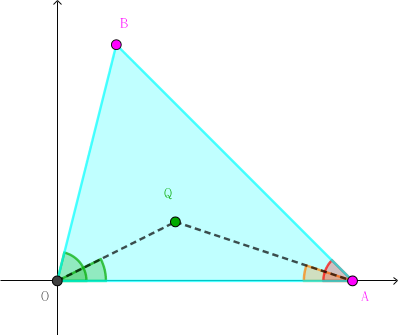

平面直角坐标系上有 $n$ 个红点 $P_0, P_1, \cdots, P_{n-1}$ 和 $m$ 个蓝点 $Q_0, Q_1, \cdots, Q_{m-1}$。其中这 $n + m$ 个点和原点 $O$ 一共 $n + m + 1$ 个点中，任意三点不共线。
显然，以原点 $O$ 和任意两个红点 $P_i, P_j$ 为顶点构成的 $\triangle O P_i P_j$ 一共有 $\dfrac {n (n-1)} 2$ 个。
如果一个三角形的内部不包含任何蓝点，则称该三角形是空的，否则称该三角形是非空的。
你的任务是判断以原点和任意两个红点为顶点构成的 $\dfrac {n (n-1)} 2$ 个三角形中，每个三角形是空的还是非空的。为了证明一个三角形非空，对于每个非空的三角形，请给出任意一个在该三角形内部的蓝点 $Q_k$ ($0 \leq k < m$)。
你需要编写一个函数 check_triangles，以完成题目的任务：
check_triangles(n, m, rx, ry, bx, by, result)
本题只支持 C/C++。
你只能提交一个源文件实现如上所述的 check_triangles 函数，并且遵循下面的命名和接口。你需要包含头文件 triangles.h。
void check_triangles(int n, int m, int *rx, int *ry, int *bx, int *by, int **result);
考虑点 $Q$ 在 $\triangle OAB$ 内部的充要条件：
不妨设 $A$ 点在 $x$ 轴正半轴上，$B$ 点在 $x$ 轴上方 (上半平面)。
则 $Q$ 点也要在上半平面，且它的极角应小于 $B$ 的极角 (即 $\measuredangle AOQ < \measuredangle AOB$)，且 $\angle QAO < \angle BAO$。
对于一个确定的三角形，它的 $\angle AOB$ 和 $\angle BAO$ 都是确定的。因此，我们只需要找到一个 $Q$ 点满足上述三个条件即可。
考虑固定 $A$ 点，那么，每个 (上半平面上的) 点 $P$ 都能唯一确定一个二元组 $\left( \angle AOP, \angle PAO \right)$，因此，上面的条件可以看成二维数点。
听说你又想离线树状数组？那你也太 naive 了吧……
你可要知道，二维数点可是有一万种不同的姿势的！
固定 $A$ 点，按极角序枚举在有向直线 $OA$ 所确定的 "左半平面" 中的点 $P$。
如果我们枚举到了一个红点，则之前枚举到的蓝点都满足前两个条件，于是我们仅需考虑第三个条件——而对于它，我们只需要取当前扫描过的点中，$\angle QAO$ 最小的蓝点就可以了！
于是，我们每扫描到一个蓝点，根据 $\angle QAO$ 的值决定是否更新 "最小蓝点候选"；每扫描到一个红点，判断 "最小蓝点候选" 是否满足 $\angle QAO < \angle BAO$，如果满足就更新答案，否则就置为 $-1$。
那么，对于每个三角形 $\angle OAB$，不妨设 $\overrightarrow {OA} \times \overrightarrow{OB} > 0$，则它就会在 "$A$ 点固定的时刻" 被唯一一次更新到。
因此时间复杂度就是 $O \left( n (n + m) \right)$。
#include "triangles.h"
#include <bits/stdc++.h>
#define N 8054
#define cross(x, y, z) (((y) - (x)) ^ ((z) - (x)))
typedef long long ll;
struct vec2 {
int x, y;
vec2 (int x0 = 0, int y0 = 0) : x(x0), y(y0) {}
vec2 * read() {scanf("%d%d", &x, &y); return this;}
inline vec2 operator - (const vec2 &B) const {return vec2(x - B.x, y - B.y);}
inline ll operator ^ (const vec2 &B) const {return (ll)x * B.y - (ll)y * B.x;}
inline bool operator < (const vec2 &B) const {return (y ^ B.y) < 0 ? B.y < 0 : (*this ^ B) > 0 || !(*this ^ B) && x >= 0 && B.x < 0;}
} p[N];
int o[N];
inline bool cmp(const int x, const int y) {return p[x] < p[y];}
void check_triangles(int n, int m, int *rx, int *ry, int *bx, int *by, int **result) {
int i, j, id, jd, res; bool in_triangle;
for (i = 0; i < n; ++i) p[i] = vec2(rx[i], ry[i]), o[i] = i;
for (i = 0; i < m; ++i) p[n + i] = vec2(bx[i], by[i]), o[n + i] = n + i;
std::sort(o, o + (n + m), cmp);
for (i = 0; i < n + m; ++i)
if ((id = o[i]) < n)
for (res = -1, j = i + 1; j == n + m && (j = 0), (p[id] ^ p[ jd = o[j] ]) > 0; ++j)
in_triangle = ~res && cross(p[id], p[jd], p[res]) > 0,
jd < n ? (result[id][jd] = result[jd][id] = in_triangle ? res - n : -1) : (in_triangle || (res = jd));
}
坑1：在实现时，可以将红点和蓝点存在一个数组中，利用 $id$ 是否小于 $n$ 判断是否是红点。数组大小是 $8000$ 不是 $4000$。